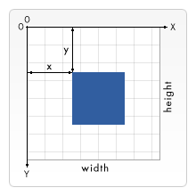
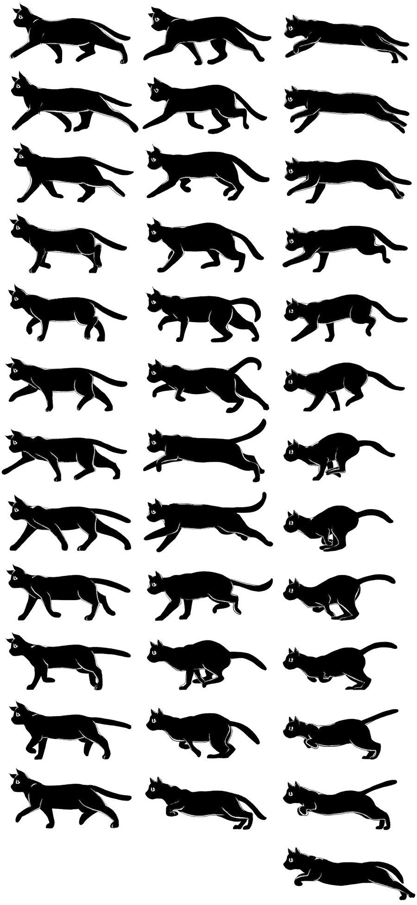

Drawing graphics
The browser contains some very powerful graphics programming tools, from the Scalable Vector Graphics (SVG) language, to APIs for drawing on HTML <canvas> elements, (see The Canvas API and WebGL). This article provides an introduction to canvas, and further resources to allow you to learn more.
| Prerequisites: | Familiarity with HTML, CSS, and JavaScript, especially JavaScript object basics and core API coverage such as DOM scripting and Network requests. |
|---|---|
| Learning outcomes: |
|
Graphics on the Web
The Web was originally just text, which was very boring, so images were introduced — first via the <img> element and later via CSS properties such as background-image, and SVG.
This however was still not enough. While you could use CSS and JavaScript to animate (and otherwise manipulate) SVG vector images — as they are represented by markup — there was still no way to do the same for bitmap images, and the tools available were rather limited. The Web still had no way to effectively create animations, games, 3D scenes, and other requirements commonly handled by lower level languages such as C++ or Java.
The situation started to improve when browsers began to support the <canvas> element and associated Canvas API in 2004. As you'll see below, canvas provides some useful tools for creating 2D animations, games, data visualizations, and other types of applications, especially when combined with some of the other APIs the web platform provides, but can be difficult or impossible to make accessible
The below example shows a simple 2D canvas-based bouncing balls animation that we originally met in our Introducing JavaScript objects module:
Around 2006–2007, Mozilla started work on an experimental 3D canvas implementation. This became WebGL, which gained traction among browser vendors, and was standardized around 2009–2010. WebGL allows you to create real 3D graphics inside your web browser.
This article will focus mainly on 2D canvas, as raw WebGL code is very complex. We will however show how to use a WebGL library to create a 3D scene more easily, and you can find a tutorial covering raw WebGL elsewhere — see Getting started with WebGL.
Getting started with a <canvas>
If you want to create a 2D or 3D scene on a web page, you need to start with an HTML <canvas> element. This element is used to define the area on the page into which the image will be drawn. This is as simple as including the element on the page:
<canvas width="320" height="240"></canvas>
This will create a canvas on the page with a size of 320 by 240 pixels.
You should put some fallback content inside the <canvas> tags. This should describe the canvas content to users of browsers that don't support canvas, or users of screen readers.
<canvas width="320" height="240">
<p>Description of the canvas for those unable to view it.</p>
</canvas>
The fallback should provide useful alternative content to the canvas content. For example, if you are rendering a constantly updating graph of stock prices, the fallback content could be a static image of the latest stock graph, with alt text saying what the prices are in text or a list of links to individual stock pages.
Note:
Canvas content is not accessible to screen readers. Include descriptive text as the value of the aria-label attribute directly on the canvas element itself or include fallback content placed within the opening and closing <canvas> tags. Canvas content is not part of the DOM, but nested fallback content is.
Creating and sizing our canvas
Let's start by creating our own canvas template to create future experiments in.
-
First, create a directory on your local hard drive called
canvas-template. -
Create a new file in the directory called
index.htmland save the following contents inside it:html<!doctype html> <html lang="en-US"> <head> <meta charset="utf-8" /> <meta name="viewport" content="width=device-width, initial-scale=1.0" /> <title>Canvas</title> <script src="script.js" defer></script> <link href="style.css" rel="stylesheet" /> </head> <body> <canvas class="myCanvas"> <p>Add suitable fallback here.</p> </canvas> </body> </html> -
Create a new file inside the directory called
style.cssand save the following CSS rule in it:cssbody { margin: 0; overflow: hidden; } -
Create a new file inside the directory called
script.js. Leave this file blank for now. -
Now open
script.jsand add the following lines of JavaScript:jsconst canvas = document.querySelector(".myCanvas"); const width = (canvas.width = window.innerWidth); const height = (canvas.height = window.innerHeight);Here we have stored a reference to the canvas in the
canvasconstant. In the second line we set both a new constantwidthand the canvas'widthproperty equal toWindow.innerWidth(which gives us the viewport width). In the third line we set both a new constantheightand the canvas'heightproperty equal toWindow.innerHeight(which gives us the viewport height). So now we have a canvas that fills the entire width and height of the browser window!You'll also see that we are chaining assignments together with multiple equals signs — this is allowed in JavaScript, and it is a good technique if you want to make multiple variables all equal to the same value. We wanted to make the canvas width and height easily accessible in the width/height variables, as they are useful values to have available for later (for example, if you want to draw something exactly halfway across the width of the canvas).
Note: You should generally set the size of the canvas using HTML attributes or DOM properties, as explained above. You could use CSS, but the trouble then is that the sizing is done after the canvas has rendered, and just like any other image, the canvas could become pixelated/distorted.
Getting the canvas context and final setup
We need to do one final thing before we can consider our canvas template finished. To draw onto the canvas we need to get a special reference to the drawing area called a context. This is done using the HTMLCanvasElement.getContext() method, which for basic usage takes a single string as a parameter representing the type of context you want to retrieve.
In this case we want a 2d canvas, so add the following JavaScript line below the others in script.js:
const ctx = canvas.getContext("2d");
Note:
Other context values you could choose include webgl for WebGL, webgpu for WebGPU, etc., but we won't need those in this article.
So that's it — our canvas is now primed and ready for drawing on! The ctx variable now contains a CanvasRenderingContext2D object, and all drawing operations on the canvas will involve manipulating this object.
Let's do one last thing before we move on. We'll color the canvas background black to give you a first taste of the canvas API. Add the following lines at the bottom of your JavaScript:
ctx.fillStyle = "black";
ctx.fillRect(0, 0, width, height);
Here we are setting a fill color using the canvas' fillStyle property (this takes color values just like CSS properties do), then drawing a rectangle that covers the entire area of the canvas with the fillRect method (the first two parameters are the coordinates of the rectangle's top left-hand corner; the last two are the width and height you want the rectangle drawn at — we told you those width and height variables would be useful)!
OK, our template is done and it's time to move on.
2D canvas basics
As we said above, all drawing operations are done by manipulating a CanvasRenderingContext2D object (in our case, ctx). Many operations need to be given coordinates to pinpoint exactly where to draw something — the top left of the canvas is point (0, 0), the horizontal (x) axis runs from left to right, and the vertical (y) axis runs from top to bottom.

Drawing shapes tends to be done using the rectangle shape primitive, or by tracing a line along a certain path and then filling in the shape. Below we'll show how to do both.
Simple rectangles
Let's start with some simple rectangles.
-
First of all, make a copy of your newly coded canvas template directory.
-
Add the following lines to the bottom of your JavaScript file:
jsctx.fillStyle = "red"; ctx.fillRect(50, 50, 100, 150);If you load your HTML in the browser, you should see a red rectangle has appeared on your canvas. Its top left corner is 50 pixels away from the top and left of the canvas edge (as defined by the first two parameters), and it is 100 pixels wide and 150 pixels tall (as defined by the third and fourth parameters).
-
Let's add another rectangle into the mix — a green one this time. Add the following at the bottom of your JavaScript:
jsctx.fillStyle = "green"; ctx.fillRect(75, 75, 100, 100);Save and refresh, and you'll see your new rectangle. This raises an important point: graphics operations like drawing rectangles, lines, and so forth are performed in the order in which they occur. Think of it like painting a wall, where each coat of paint overlaps and may even hide what's underneath. You can't do anything to change this, so you have to think carefully about the order in which you draw the graphics.
-
Note that you can draw semi-transparent graphics by specifying a semi-transparent color, for example by using
rgb(). The "alpha channel" defines the amount of transparency the color has. The higher its value, the more it will obscure whatever's behind it. Add the following to your code:jsctx.fillStyle = "rgb(255 0 255 / 75%)"; ctx.fillRect(25, 100, 175, 50); -
Now try drawing some more rectangles of your own; have fun!
Strokes and line widths
So far we've looked at drawing filled rectangles, but you can also draw rectangles that are just outlines (called strokes in graphic design). To set the color you want for your stroke, you use the strokeStyle property; drawing a stroke rectangle is done using strokeRect.
-
Add the following to the previous example, again below the previous JavaScript lines:
jsctx.strokeStyle = "white"; ctx.strokeRect(25, 25, 175, 200); -
The default width of strokes is 1 pixel; you can adjust the
lineWidthproperty value to change this (it takes a number representing the number of pixels wide the stroke is). Add the following line in between the previous two lines:jsctx.lineWidth = 5;
Now you should see that your white outline has become much thicker! That's it for now. At this point your example should look like this:
You can press the Play button to open the example in MDN Playground and edit the source code.
Drawing paths
If you want to draw anything more complex than a rectangle, you need to draw a path. Basically, this involves writing code to specify exactly what path the pen should move along on your canvas to trace the shape you want to draw. Canvas includes functions for drawing straight lines, circles, Bézier curves, and more.
Start the section off by making a fresh copy of your canvas template in which to draw the new example.
We'll be using some common methods and properties across all of the below sections:
beginPath()— start drawing a path at the point where the pen currently is on the canvas. On a new canvas, the pen starts out at (0, 0).moveTo()— move the pen to a different point on the canvas, without recording or tracing the line; the pen "jumps" to the new position.fill()— draw a filled shape by filling in the path you've traced so far.stroke()— draw an outline shape by drawing a stroke along the path you've drawn so far.- You can also use features like
lineWidthandfillStyle/strokeStylewith paths as well as rectangles.
A typical, simple path-drawing operation would look something like so:
ctx.fillStyle = "red";
ctx.beginPath();
ctx.moveTo(50, 50);
// draw your path
ctx.fill();
Drawing lines
Let's draw an equilateral triangle on the canvas.
-
First of all, add the following helper function to the bottom of your code. This converts degree values to radians, which is useful because whenever you need to provide an angle value in JavaScript, it will nearly always be in radians, but humans usually think in degrees.
jsfunction degToRad(degrees) { return (degrees * Math.PI) / 180; } -
Next, start off your path by adding the following below your previous addition; here we set a color for our triangle, start drawing a path, and then move the pen to (50, 50) without drawing anything. That's where we'll start drawing our triangle.
jsctx.fillStyle = "red"; ctx.beginPath(); ctx.moveTo(50, 50); -
Now add the following lines at the bottom of your script:
jsctx.lineTo(150, 50); const triHeight = 50 * Math.tan(degToRad(60)); ctx.lineTo(100, 50 + triHeight); ctx.lineTo(50, 50); ctx.fill();Let's run through this in order:
First we draw a line across to (150, 50) — our path now goes 100 pixels to the right along the x axis.
Second, we work out the height of our equilateral triangle, using a bit of simple trigonometry. Basically, we are drawing the triangle pointing downwards. The angles in an equilateral triangle are always 60 degrees; to work out the height we can split it down the middle into two right-angled triangles, which will each have angles of 90 degrees, 60 degrees, and 30 degrees. In terms of the sides:
- The longest side is called the hypotenuse
- The side next to the 60 degree angle is called the adjacent — which we know is 50 pixels, as it is half of the line we just drew.
- The side opposite the 60 degree angle is called the opposite, which is the height of the triangle we want to calculate.
![An equilateral triangle pointing downwards with labeled angles and sides. The horizontal line at the top is labeled 'adjacent'. A perpendicular dotted line, from the middle of the adjacent line, labeled 'opposite', splits the triangle creating two equal right triangles. The right side of the triangle is labeled the hypotenuse, as it is the hypotenuse of the right triangle formed by the line labeled 'opposite'. while all three-sided of the triangle are of equal length, the hypotenuse is the longest side of the right triangle.](Drawing_graphics/trigonometry.png)
One of the basic trigonometric formulae states that the length of the adjacent multiplied by the tangent of the angle is equal to the opposite, hence we come up with
50 * Math.tan(degToRad(60)). We use ourdegToRad()function to convert 60 degrees to radians, asMath.tan()expects an input value in radians. -
With the height calculated, we draw another line to
(100, 50 + triHeight). The X coordinate is simple; it must be halfway between the previous two X values we set. The Y value on the other hand must be 50 plus the triangle height, as we know the top of the triangle is 50 pixels from the top of the canvas. -
The next line draws a line back to the starting point of the triangle.
-
Last of all, we run
ctx.fill()to end the path and fill in the shape.
Drawing circles
Now let's look at how to draw a circle in canvas. This is accomplished using the arc() method, which draws all or part of a circle at a specified point.
-
Let's add an arc to our canvas — add the following to the bottom of your code:
jsctx.fillStyle = "blue"; ctx.beginPath(); ctx.arc(150, 106, 50, degToRad(0), degToRad(360), false); ctx.fill();arc()takes six parameters. The first two specify the position of the arc's center (X and Y, respectively). The third is the circle's radius, the fourth and fifth are the start and end angles at which to draw the circle (so specifying 0 and 360 degrees gives us a full circle), and the sixth parameter defines whether the circle should be drawn counterclockwise (anticlockwise) or clockwise (falseis clockwise).Note: 0 degrees is horizontally to the right.
-
Let's try adding another arc:
jsctx.fillStyle = "yellow"; ctx.beginPath(); ctx.arc(200, 106, 50, degToRad(-45), degToRad(45), true); ctx.lineTo(200, 106); ctx.fill();The pattern here is very similar, but with two differences:
- We have set the last parameter of
arc()totrue, meaning that the arc is drawn counterclockwise, which means that even though the arc is specified as starting at -45 degrees and ending at 45 degrees, we draw the arc around the 270 degrees not inside this portion. If you were to changetruetofalseand then re-run the code, only the 90 degree slice of the circle would be drawn. - Before calling
fill(), we draw a line to the center of the circle. This means that we get the rather nice Pac-Man-style cutout rendered. If you removed this line (try it!) then re-ran the code, you'd get just an edge of the circle chopped off between the start and end point of the arc. This illustrates another important point of the canvas — if you try to fill an incomplete path (i.e., one that is not closed), the browser fills in a straight line between the start and end point and then fills it in.
- We have set the last parameter of
That's it for now; your final example should look like this:
You can press the Play button to open the example in MDN Playground and edit the source code.
Note: To find out more about advanced path drawing features such as Bézier curves, check out our Drawing shapes with canvas tutorial.
Text
Canvas also has features for drawing text. Let's explore these briefly. Start by making another fresh copy of your canvas template in which to draw the new example.
Text is drawn using two methods:
fillText()— draws filled text.strokeText()— draws outline (stroke) text.
Both of these take three properties in their basic usage: the text string to draw and the X and Y coordinates of the point to start drawing the text at. This works out as the bottom left corner of the text box (literally, the box surrounding the text you draw), which might confuse you as other drawing operations tend to start from the top left corner — bear this in mind.
There are also a number of properties to help control text rendering such as font, which lets you specify font family, size, etc. It takes as its value the same syntax as the CSS font property.
Canvas content is not accessible to screen readers. Text painted to the canvas is not available to the DOM, but must be made available to be accessible. In this example, we include the text as the value for aria-label.
Try adding the following block to the bottom of your JavaScript:
ctx.strokeStyle = "white";
ctx.lineWidth = 1;
ctx.font = "36px arial";
ctx.strokeText("Canvas text", 50, 50);
ctx.fillStyle = "red";
ctx.font = "48px georgia";
ctx.fillText("Canvas text", 50, 150);
canvas.setAttribute("aria-label", "Canvas text");
Here we draw two lines of text, one outline and the other stroke. The example should look like so:
Press the Play button to open the example in MDN Playground and edit the source code. Have a play and see what you can come up with! You can find more information on the options available for canvas text at Drawing text.
Drawing images onto canvas
It is possible to render external images onto your canvas. These can be simple images, frames from videos, or the content of other canvases. For the moment we'll just look at the case of using some simple images on our canvas.
-
As before, make another fresh copy of your canvas template in which to draw the new example.
Images are drawn onto canvas using the
drawImage()method. The simplest version takes three parameters — a reference to the image you want to render, and the X and Y coordinates of the image's top left corner. -
Let's start by getting an image source to embed in our canvas. Add the following lines to the bottom of your JavaScript:
jsconst image = new Image(); image.src = "https://mdn.github.io/shared-assets/images/examples/fx-nightly-512.png";Here we create a new
HTMLImageElementobject using theImage()constructor. The returned object is the same type as that which is returned when you grab a reference to an existing<img>element. We then set itssrcattribute to equal our Firefox logo image. At this point, the browser starts loading the image. -
We could now try to embed the image using
drawImage(), but we need to make sure the image file has been loaded first, otherwise the code will fail. We can achieve this using theloadevent, which will only be fired when the image has finished loading. Add the following block below the previous one:jsimage.addEventListener("load", () => ctx.drawImage(image, 20, 20));If you load your example in the browser now, you should see the image embedded in the canvas, albeit rather large.
-
But there's more! What if we want to display only a part of the image, or to resize it? We can do both with the more complex version of
drawImage(). Update yourctx.drawImage()line like so:jsctx.drawImage(image, 0, 0, 512, 512, 50, 40, 185, 185);- The first parameter is the image reference, as before.
- Parameters 2 and 3 define the coordinates of the top left corner of the area you want to cut out of the loaded image, relative to the top-left corner of the image itself. Nothing to the left of the first parameter or above the second will be drawn.
- Parameters 4 and 5 define the width and height of the area we want to cut out from the original image we loaded.
- Parameters 6 and 7 define the coordinates at which you want to draw the top-left corner of the cut-out portion of the image, relative to the top-left corner of the canvas.
- Parameters 8 and 9 define the width and height to draw the cut-out area of the image. In this case, we have specified the same dimensions as the original slice, but you could resize it by specifying different values.
-
When the image is meaningfully updated, the description must also be updated.
jscanvas.setAttribute("aria-label", "Firefox Logo");
The final example should look like so:
Press the Play button to open the example in MDN Playground and edit the source code.
Loops and animations
We have so far covered some very basic uses of 2D canvas, but really you won't experience the full power of canvas unless you update or animate it in some way. After all, canvas does provide scriptable images! If you aren't going to change anything, then you might as well just use static images and save yourself all the work.
Creating a loop
Playing with loops in canvas is rather fun — you can run canvas commands inside a for (or other type of) loop just like any other JavaScript code.
Let's build an example.
-
Make another fresh copy of your canvas template.
-
Add the following line to the bottom of your JavaScript. This contains a new method,
translate(), which moves the origin point of the canvas:jsctx.translate(width / 2, height / 2);This causes the coordinate origin (0, 0) to be moved to the center of the canvas, rather than being at the top left corner. This is very useful in many situations, like this one, where we want our design to be drawn relative to the center of the canvas.
-
Now add the following code to the bottom of the JavaScript:
jsfunction degToRad(degrees) { return (degrees * Math.PI) / 180; } function rand(min, max) { return Math.floor(Math.random() * (max - min + 1)) + min; } let length = 250; let moveOffset = 20;Here we are implementing the same
degToRad()function we saw in the triangle example above, arand()function that returns a random number between given lower and upper bounds, and thelengthandmoveOffsetvariables (which we'll find out more about later). -
The idea here is that we'll draw something on the canvas inside the
forloop, and iterate on it each time so we can create something interesting. Add the following code inside yourforloop:jsfor (let i = 0; i < length; i++) { ctx.fillStyle = `rgb(${255 - length} 0 ${255 - length} / 90%)`; ctx.beginPath(); ctx.moveTo(moveOffset, moveOffset); ctx.lineTo(moveOffset + length, moveOffset); const triHeight = (length / 2) * Math.tan(degToRad(60)); ctx.lineTo(moveOffset + length / 2, moveOffset + triHeight); ctx.lineTo(moveOffset, moveOffset); ctx.fill(); length--; moveOffset += 0.7; ctx.rotate(degToRad(5)); }So on each iteration, we:
- Set the
fillStyleto be a shade of slightly transparent purple, which changes each time based on the value oflength. As you'll see later the length gets smaller each time the loop runs, so the effect here is that the color gets brighter with each successive triangle drawn. - Begin the path.
- Move the pen to a coordinate of
(moveOffset, moveOffset). This variable defines how far we want to move each time we draw a new triangle. - Draw a line to a coordinate of
(moveOffset+length, moveOffset). This draws a line of lengthlengthparallel to the X axis. - Calculate the triangle's height, as before.
- Draw a line to the downward-pointing corner of the triangle, then draw a line back to the start of the triangle.
- Call
fill()to fill in the triangle. - Update the variables that describe the sequence of triangles, so we can be ready to draw the next one. We decrease the
lengthvalue by 1, so the triangles get smaller each time; increasemoveOffsetby a small amount so each successive triangle is slightly further away, and use another new function,rotate(), which allows us to rotate the entire canvas! We rotate it by 5 degrees before drawing the next triangle.
- Set the
That's it! The final example should look like so:
Press the Play button to open the example in MDN Playground and edit the source code. We'd like to encourage you to play with the example and make it your own! For example:
- Draw rectangles or arcs instead of triangles, or even embed images.
- Play with the
lengthandmoveOffsetvalues. - Introduce some random numbers using that
rand()function we included above but didn't use.
Animations
The loop example we built above was fun, but really you need a constant loop that keeps going and going for any serious canvas applications (such as games and real time visualizations). If you think of your canvas as being like a movie, you really want the display to update on each frame to show the updated view, with an ideal refresh rate of 60 frames per second so that movement appears nice and smooth to the human eye.
There are a few JavaScript functions that will allow you to run functions repeatedly, several times a second, the best one for our purposes here being window.requestAnimationFrame(). It takes one parameter — the name of the function you want to run for each frame. The next time the browser is ready to update the screen, your function will get called. If that function draws the new update to your animation, then calls requestAnimationFrame() again just before the end of the function, the animation loop will continue to run. The loop ends when you stop calling requestAnimationFrame() or if you call window.cancelAnimationFrame() after calling requestAnimationFrame() but before the frame is called.
Note:
It's good practice to call cancelAnimationFrame() from your main code when you're done using the animation, to ensure that no updates are still waiting to be run.
The browser works out complex details such as making the animation run at a consistent speed, and not wasting resources animating things that can't be seen.
To see how it works, let's quickly look again at our Bouncing Balls example. The code for the loop that keeps everything moving looks like this:
function loop() {
ctx.fillStyle = "rgb(0 0 0 / 25%)";
ctx.fillRect(0, 0, width, height);
for (const ball of balls) {
ball.draw();
ball.update();
ball.collisionDetect();
}
requestAnimationFrame(loop);
}
loop();
We run the loop() function once at the bottom of the code to start the cycle, drawing the first animation frame; the loop() function then takes charge of calling requestAnimationFrame(loop) to run the next frame of the animation, again and again.
Note that on each frame we are completely clearing the canvas and redrawing everything. For every ball present we draw it, update its position, and check to see if it is colliding with any other balls. Once you've drawn a graphic to a canvas, there's no way to manipulate that graphic individually like you can with DOM elements. You can't move each ball around on the canvas, because once it's drawn, it's part of the canvas, and is not an individual accessible element or object. Instead, you have to erase and redraw, either by erasing the entire frame and redrawing everything, or by having code that knows exactly what parts need to be erased and only erases and redraws the minimum area of the canvas necessary.
Optimizing animation of graphics is an entire specialty of programming, with lots of clever techniques available. Those are beyond what we need for our example, though!
In general, the process of doing a canvas animation involves the following steps:
- Clear the canvas contents (e.g., with
fillRect()orclearRect()). - Save state (if necessary) using
save()— this is needed when you want to save settings you've updated on the canvas before continuing, which is useful for more advanced applications. - Draw the graphics you are animating.
- Restore the settings you saved in step 2, using
restore() - Call
requestAnimationFrame()to schedule drawing of the next frame of the animation.
Note:
We won't cover save() and restore() here, but they are explained nicely in our Transformations tutorial (and the ones that follow it).
Walking object animation
Now let's create our own simple animation — we'll be animating a moving object across the screen using a sprite sheet.
-
Make another fresh copy of our canvas template and open it in your code editor.
-
Update the fallback HTML to reflect the image:
html<canvas class="myCanvas"> <p>A cat walking.</p> </canvas> -
This time, we won't be coloring the background black. So after acquiring the
ctxvariable, paint the background light gray instead:jsctx.fillStyle = "#e5e6e9"; ctx.fillRect(0, 0, width, height); -
At the bottom of the JavaScript, add the following line to once again make the coordinate origin sit in the middle of the canvas:
jsctx.translate(width / 2, height / 2); -
Now let's create a new
HTMLImageElementobject, set itssrcto the image we want to load, and add anonloadevent handler that will cause thedraw()function to fire when the image is loaded:jsconst image = new Image(); image.src = "https://developer.mozilla.org/shared-assets/images/examples/web-animations/cat_sprite.png"; image.onload = draw; -
Now we'll add some variables to keep track of the position the sprite is to be drawn on the screen, and the sprite number we want to display.
jslet spriteIndex = 0; let posX = 0; const spriteWidth = 300; const spriteHeight = 150; const totalSprites = 12;The sprite image is created by and shared at the courtesy of Rachel Nabors, for their documentation work on the Web Animations API. It looks like this:

It has three columns. Each column is a sequence representing the cat moving at a different pace (walking, trotting, and galloping). Each sequence contains either 12 or 13 sprites — each one is 300 pixels wide and 150 pixels high. We will be using the leftmost walking sequence, which contains 12 sprites. To display each sprite cleanly we will have to use
drawImage()to chop out a single sprite image from the spritesheet and display only that part, like we did above with the Firefox logo. The X and Y coordinates of the slice will have to be a multiple ofspriteWidthandspriteHeight, respectively; because we are using the leftmost sequence, the X coordinate is always 0. The slice size will always bespriteWidthbyspriteHeight. -
Now let's insert an empty
draw()function at the bottom of the code, ready for filling up with some code:jsfunction draw() {} -
The rest of the code in this section goes inside
draw(). First, add the following line, which clears the canvas to prepare for drawing each frame. Notice that we have to specify the top-left corner of the rectangle as-(width / 2), -(height / 2)because we specified the origin position aswidth/2, height/2earlier on.jsctx.fillRect(-(width / 2), -(height / 2), width, height); -
Next, we'll draw our image using drawImage — the 9-parameter version. Add the following:
jsctx.drawImage( image, 0, spriteIndex * spriteHeight, spriteWidth, spriteHeight, 0 + posX, -spriteHeight / 2, spriteWidth, spriteHeight, );As you can see:
- We specify
imageas the image to embed. - Parameters 2 and 3 specify the top-left corner of the slice to cut out of the source image, with the X value as 0 (for the leftmost column) and the Y value cycling through multiples of
spriteHeight. You can replace the X value withspriteWidthor2 * spriteWidthto select the other columns. - Parameters 4 and 5 specify the size of the slice to cut out —
spriteWidthandspriteHeight. - Parameters 6 and 7 specify the top-left corner of the box into which to draw the slice on the canvas — the X position is 0 +
posX, meaning that we can alter the drawing position by altering theposXvalue. The Y position is-spriteHeight / 2, which means that the image will be vertically centered on the canvas. - Parameters 8 and 9 specify the size of the image on the canvas. We just want to keep its original size, so we specify
spriteWidthandspriteHeightas the width and height.
- We specify
-
Now we'll alter the
spriteIndexvalue after each draw — well, after some of them anyway. Add the following block to the bottom of thedraw()function:jsif (posX % 11 === 0) { if (spriteIndex === totalSprites - 1) { spriteIndex = 0; } else { spriteIndex++; } }We are wrapping the whole block in
if (posX % 11 === 0) { }. We use the modulo (%) operator (also known as the remainder operator) to check whether theposXvalue can be exactly divided by 11 with no remainder. If so, we move on to the next sprite by incrementingspriteIndex(wrapping to 0 after we're done with the last one). This effectively means that we are only updating the sprite on every 11th frame, or roughly about 6 frames a second (requestAnimationFrame()calls us at up to 60 frames per second if possible). We are deliberately slowing down the frame rate because we only have 12 sprites to work with, and if we display one every 60th of a second, our object will move way too fast!Inside the outer block we use an
if...elsestatement to check whether thespriteIndexvalue is at the last one. If we are showing the last sprite already, we resetspriteIndexback to 0; if not we just increment it by 1. -
Next we need to work out how to change the
posXvalue on each frame — add the following code block just below your last one.jsif (posX < -width / 2 - spriteWidth) { const newStartPos = width / 2; posX = Math.ceil(newStartPos); } else { posX -= 2; }We are using another
if...elsestatement to see if the value ofposXhas become less than-width/2 - spriteWidth, which means our cat has walked off the left edge of the screen. If so, we calculate a position that would put the cat just to the right of the right side of the screen.If our cat hasn't yet walked off the edge of the screen, we decrement
posXby 2. This will make it move a little bit to the left the next time we draw it. -
Finally, we need to make the animation loop by calling
requestAnimationFrame()at the bottom of thedraw()function:jswindow.requestAnimationFrame(draw);
That's it! The final example should look like so:
You can press the Play button to open the example in MDN Playground and edit the source code.
A simple drawing application
As a final animation example, we'd like to show you a very simple drawing application, to illustrate how the animation loop can be combined with user input (like mouse movement, in this case). We won't get you to walk through and build this one; we'll just explore the most interesting parts of the code.
You can play with the example live below; you can also click the Play button to open it in the MDN Playground, where you can edit the source code:
Let's look at the most interesting parts. First of all, we keep track of the mouse's X and Y coordinates and whether it is being clicked or not with three variables: curX, curY, and pressed. When the mouse moves, we fire a function set as the onmousemove event handler, which captures the current X and Y values. We also use onmousedown and onmouseup event handlers to change the value of pressed to true when the mouse button is pressed, and back to false again when it is released.
let curX;
let curY;
let pressed = false;
// update mouse pointer coordinates
document.addEventListener("mousemove", (e) => {
curX = e.pageX;
curY = e.pageY;
});
canvas.addEventListener("mousedown", () => (pressed = true));
canvas.addEventListener("mouseup", () => (pressed = false));
When the "Clear canvas" button is pressed, we run a simple function that clears the whole canvas back to black, the same way we've seen before:
clearBtn.addEventListener("click", () => {
ctx.fillStyle = "black";
ctx.fillRect(0, 0, width, height);
});
The drawing loop is pretty simple this time around — if pressed is true, we draw a circle with a fill style equal to the value in the color picker, and a radius equal to the value set in the range input. We have to draw the circle 85 pixels above where we measured it from, because the vertical measurement is taken from the top of the viewport, but we are drawing the circle relative to the top of the canvas, which starts below the 85 pixel-high toolbar. If we drew it with just curY as the y coordinate, it would appear 85 pixels lower than the mouse position.
function draw() {
if (pressed) {
ctx.fillStyle = colorPicker.value;
ctx.beginPath();
ctx.arc(
curX,
curY - 85,
sizePicker.value,
degToRad(0),
degToRad(360),
false,
);
ctx.fill();
}
requestAnimationFrame(draw);
}
draw();
All <input> types are well supported. If a browser doesn't support an input type, it will fall back to a plain text fields.
WebGL
It's now time to leave 2D behind, and take a quick look at 3D canvas. 3D canvas content is specified using the WebGL API, which is a completely separate API from the 2D canvas API, even though they both render onto <canvas> elements.
WebGL is based on OpenGL (Open Graphics Library), and allows you to communicate directly with the computer's GPU. As such, writing raw WebGL is closer to low level languages such as C++ than regular JavaScript; it is quite complex but incredibly powerful.
Using a library
Because of its complexity, most people write 3D graphics code using a third party JavaScript library such as Three.js, PlayCanvas, or Babylon.js. Most of these work in a similar way, providing functionality to create primitive and custom shapes, position viewing cameras and lighting, covering surfaces with textures, and more. They handle the WebGL for you, letting you work on a higher level.
Yes, using one of these means learning another new API (a third party one, in this case), but they are a lot simpler than coding raw WebGL.
A spinning cube
Let's look at an example of how to create something with a WebGL library. We'll choose Three.js, as it is one of the most popular ones. In this tutorial we'll create a 3D spinning cube.
-
To start with, create a new folder in your local hard drive called
webgl-cube. -
Inside it, create a new file called
index.htmland add the following content to it:html<!doctype html> <html lang="en-US"> <head> <meta charset="utf-8" /> <meta name="viewport" content="width=device-width, initial-scale=1.0" /> <title>Three.js basic cube example</title> <script src="https://cdn.jsdelivr.net/npm/three-js@79.0.0/three.min.js"></script> <script src="script.js" defer></script> <link href="style.css" rel="stylesheet" /> </head> <body></body> </html> -
Next, create another new file called
script.js, again in the same folder as before. Leave it empty for now. -
Now create another new file called
style.css, again in the same folder, and add the following content to it:csshtml, body { margin: 0; } body { overflow: hidden; } -
We've got
three.jsincluded in our page (this is what the first<script>element in our HTML is doing), so now we can start to write JavaScript that makes use of it intoscript.js. Let's start by creating a new scene — add the following into yourscript.jsfile:jsconst scene = new THREE.Scene();The
Scene()constructor creates a new scene, which represents the whole 3D world we are trying to display. -
Next, we need a camera so we can see the scene. In 3D imagery terms, the camera represents a viewer's position in the world. To create a camera, add the following lines next:
jsconst camera = new THREE.PerspectiveCamera( 75, window.innerWidth / window.innerHeight, 0.1, 1000, ); camera.position.z = 5;The
PerspectiveCamera()constructor takes four arguments:- The field of view: How wide the area in front of the camera is that should be visible onscreen, in degrees.
- The aspect ratio: Usually, this is the ratio of the scene's width divided by the scene's height. Using another value will distort the scene (which might be what you want, but usually isn't).
- The near plane: How close to the camera objects can be before we stop rendering them to the screen. Think about how when you move your fingertip closer and closer to the space between your eyes, eventually you can't see it anymore.
- The far plane: How far away things are from the camera before they are no longer rendered.
We also set the camera's position to be 5 distance units out of the Z axis, which, like in CSS, is out of the screen towards you, the viewer.
-
The third vital ingredient is a renderer. This is an object that renders a given scene, as viewed through a given camera. We'll create one for now using the
WebGLRenderer()constructor, but we'll not use it till later. Add the following lines next:jsconst renderer = new THREE.WebGLRenderer(); renderer.setSize(window.innerWidth, window.innerHeight); document.body.appendChild(renderer.domElement);The first line creates a new renderer, the second line sets the size at which the renderer will draw the camera's view, and the third line appends the
<canvas>element created by the renderer to the document's<body>. Now anything the renderer draws will be displayed in our window. -
Next, we want to create the cube we'll display on the canvas. Add the following chunk of code at the bottom of your JavaScript:
jslet cube; const loader = new THREE.TextureLoader(); loader.load( "https://mdn.github.io/shared-assets/images/examples/learn/metal003.png", (texture) => { texture.wrapS = THREE.RepeatWrapping; texture.wrapT = THREE.RepeatWrapping; texture.repeat.set(2, 2); const geometry = new THREE.BoxGeometry(2.4, 2.4, 2.4); const material = new THREE.MeshLambertMaterial({ map: texture }); cube = new THREE.Mesh(geometry, material); scene.add(cube); draw(); }, );There's a bit more to take in here, so let's go through it in stages:
- We first create a
cubeglobal variable so we can access our cube from anywhere in the code. - Next, we create a new
TextureLoaderobject, then callload()on it.load()takes two parameters in this case (although it can take more): the texture we want to load (a PNG), and a function that will run when the texture has loaded. - Inside this function we use properties of the
textureobject to specify that we want a 2 x 2 repeat of the image wrapped around all sides of the cube. Next, we create a newBoxGeometryobject and a newMeshLambertMaterialobject, and bring them together in aMeshto create our cube. An object typically requires a geometry (what shape it is) and a material (what its surface looks like). - Last of all, we add our cube to the scene, then call our
draw()function to start off the animation.
- We first create a
-
Before we get to defining
draw(), we'll add a couple of lights to the scene, to liven things up a bit; add the following blocks next:jsconst light = new THREE.AmbientLight("white"); // soft white light scene.add(light); const spotLight = new THREE.SpotLight("white"); spotLight.position.set(100, 1000, 1000); spotLight.castShadow = true; scene.add(spotLight);An
AmbientLightobject is a kind of soft light that lightens the whole scene a bit, like the sun when you are outside. TheSpotLightobject, on the other hand, is a directional beam of light, more like a flashlight/torch (or a spotlight, in fact). -
Last of all, let's add our
draw()function to the bottom of the code:jsfunction draw() { cube.rotation.x += 0.01; cube.rotation.y += 0.01; renderer.render(scene, camera); requestAnimationFrame(draw); }This is fairly intuitive; on each frame, we rotate our cube slightly on its X and Y axes, then render the scene as viewed by our camera, then finally call
requestAnimationFrame()to schedule drawing our next frame.
The finished product should look like:
Note:
In our GitHub repo you can also find another interesting 3D cube example — Three.js Video Cube (see it live also). This uses getUserMedia() to take a video stream from a computer web cam and project it onto the side of the cube as a texture!
Summary
At this point, you should have a useful idea of the basics of graphics programming using Canvas and WebGL and what you can do with these APIs, as well as a good idea of where to go for further information. Have fun!
See also
Here we have covered only the real basics of canvas — there is so much more to learn! The below articles will take you further.
- Canvas tutorial — A very detailed tutorial series explaining what you should know about 2D canvas in much more detail than was covered here. Essential reading.
- WebGL tutorial — A series that teaches the basics of raw WebGL programming.
- Building up a basic demo with Three.js — basic Three.js tutorial. We also have equivalent guides for PlayCanvas or Babylon.js.
- Game development — the landing page for web games development on MDN. There are some really useful tutorials and techniques available here related to 2D and 3D canvas — see the Techniques and Tutorials menu options.
Examples
- Violent theremin — Uses the Web Audio API to generate sound, and canvas to generate a pretty visualization to go along with it.
- Voice change-o-matic — Uses a canvas to visualize real-time audio data from the Web Audio API.